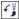

ыстрые ссылки на процедуры, описанные на этой странице:
• |
• |
• |
• |
Изображения и объекты можно изменить путем удаления областей. Например, можно удалить часть объекта, чтобы изменить его форму или показать дополнительную часть слоя ниже. Можно также стереть области изображения для выявления фонового цвета или частично стереть результат последнего действия, примененного для изображения.
Инструменты, используемые для удаления, имеют множество параметров, напоминающих параметры кистей, которые контролируют размер, форму и прозрачность для создания уникальных эффектов. Например, можно применить растровую заливку ко всему изображению, увеличить значение прозрачности инструмента ластика, а также создать эффект наложения, частично удалив заливку (последнее действие). Кроме того, можно удалить области изображения на основе цвета. Цвет фона заменяет удаляемый цвет переднего плана.
Для удаления фона использован инструмент Ластик.
| Удаление части объекта |
1. |
Выделите объект.
|
2. |
Выберите инструмент Ластик |
3. |
На панели свойств укажите требуемые параметры.
|
4. |
Перетащите курсор в область, которую требуется удалить.
|
Удаляемые области откроют находящиеся под ними объекты.
|
Чтобы сохранить форму объекта, нажмите кнопку Блокировать
прозрачность объекта |
| Удаление областей изображения и выявление фонового цвета |
1. |
Выберите инструмент Ластик |
2. |
На панели свойств укажите требуемые параметры.
|
3. |
Перетащите курсор по области изображения, которую требуется удалить.
|
| Стирание результатов последнего действия, примененного для изображения |
1. |
В наборе инструментов выберите инструмент Отмена .
|
2. |
На панели свойств укажите требуемые параметры.
|
3. |
Перетащите курсор в область, которую требуется удалить.
|
Если требуется полностью удалить последнее действие, нажмите
кнопку Отмена |
Можно также стереть результат последнего действия, примененного
для объекта, но для удаления самого объекта необходимо
использовать инструмент Ластик |
| Замена цвета переднего плана цветом фона |
1. |
В наборе инструментов выберите инструмент Кисть замены цветов .
|
2. |
Выберите форму кончика в меню выбора Форма кончика на панели
свойств.
|
3. |
Введите значение в поле Допуск для указания отклонения цвета на
основе подобия цвета.
|
4. |
В области управления цветом набора инструментов дважды щелкните
образец Цвет переднего плана и выберите цвет.
|
5. |
Перетащите курсор в окне изображения.
|
Можно выбрать цвет переднего плана изображения, выбрав
инструмент Пипетка |
Можно быстро выбрать квадратную или круглую форму кисти с
помощью кнопки Круглый кончик |
Copyright 2012 Corel Corporation. Все права защищены.